Programmer
- Ce que j'ai fait
R1.01 - Initiation aux réseaux informatiques / R1.08 - Bases des sytèmes d'exploitationDurant cette activité nous avons commencé par une prise en main du système d'exploitation Linux et de Windows. Ce que nous devons était un réseau liant les ces deux machines.
Pour cela, nous avons créé les machines virtuelles avec des cartes réseau internes. Puis nous les avons chacun attribué des adresses IP se trouvant dans le même réseau.
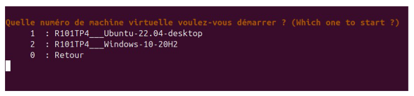
Puis,j'ai notamment configuré les machines en mode statique car il n'y avait pas besoin d'adresse dynamique.
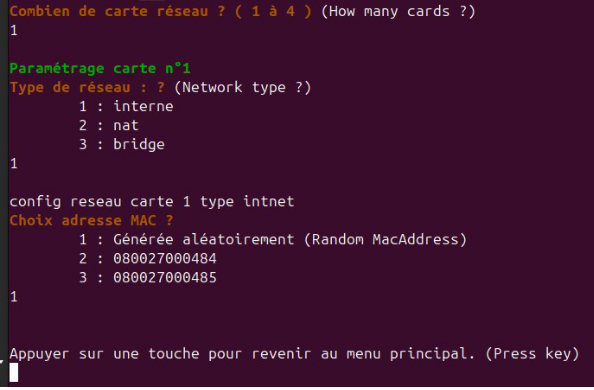
Ensuite il fallait que je désactive pare-feu réseau public dans "Pare-feu Windows Defender"
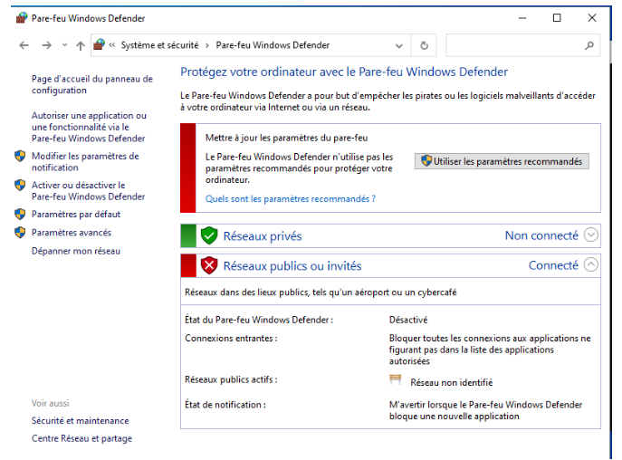
Enfin j'ai effectué les tests de connexion, et j'observe que les test fonctionne parfaitement
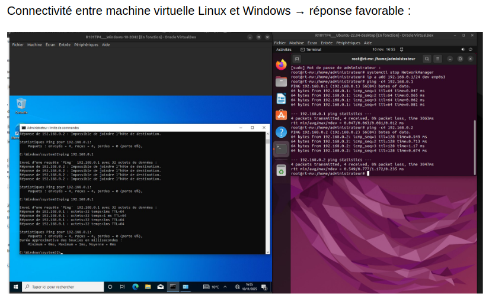
- Difficultés
J’ai rencontré des difficultés lors des attributions d'adresse aux machines car le faire en ligne commande au début n'étatait pas très intuitifs.
- Ce que j’ai appris
Cette activité m’a permis de comprendre le concept de connexion entre machine et de créer un réseau.
- Ce que je ferai autrement
Si je devais refaire ce travail, j'attribuerais les adresses avec l'interface graphique de la machine si possible.
- Ce que j'ai fait
R1.07 - fondamentaux de la programmationDans un programme python j'ai créé un dictionnaire contenant les informations d'un étudiant.
L'exemple du programme :
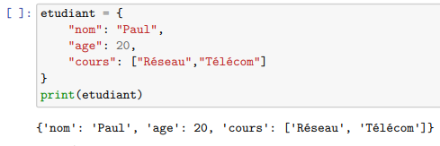
Les résultats souhaités :
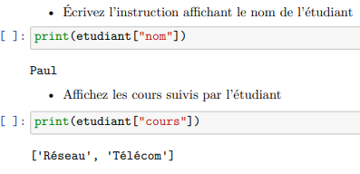
Informations manquantes dans le dictionnaire :
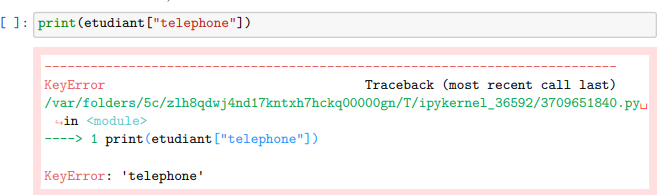
- Difficultés
J’ai rencontré des difficultés lors des lectures d'erreurs car ils existent plusieurs type d'erreur .
- Ce que j’ai appris
Cette activité m’a permis d'être un peu plus rigoureux et réactif quand il y a des corrections à faire.
- Ce que je ferai autrement
Si je devais refaire cette activité, je ferai attention aux syntaxes et j'identifierais en avance la structure de données utilisée.
- R1.07 - fondamentaux de la programmation
Dans cadre de cette activité, j'ai créé des codes pythons simple mais aussi des scripts.
Pour commencer, notre initiation en réseau nous avons créé un programme permettant de détecter la classe de l'adresse IP.
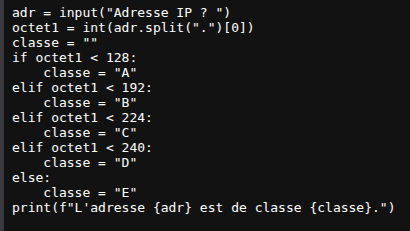
Puis, nous avons utilisé python pour directement intéragir avec le système d'exploitation.
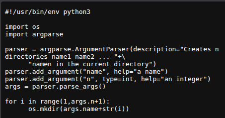
- Difficultés rencontrées
J'ai rencontré des difficulté notamment au niveau de l'écriture des scripts car ils suivaient une syntaxe particulière.
- Ce que j’ai appris
Cette activité m’a permis de voir python sous un autre angle.
J'ai aussi appris à ecrire des scripts.
- Ce que je ferai autrement
Si je devais refaire ce travail, j'utiliserais un mémo pour scripter sinon j'utiliserais la documentation sur internet.
- Ce que j'ai fait
R1.09 - introduction aux technologies web / PortfolioDans cette activité, j'ai créé mon propre site web portfolio.
Pour cela, j'ai utilisé HTML pour le corps et CSS pour mettre la décoration.
Et j'ai aussi utilisé Bootstrap pour avoir une structure.
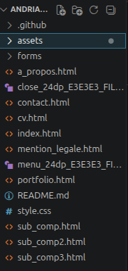
Mon site est hébergé par Github.
- Difficultés
J’ai rencontré des difficultés de la composition de la page car en codant je peux occuper plusieurs lignes de code et je peux me perdre.
- Ce que j’ai appris
Cette activité m’a permis de rendre mon site en fonctionnel.
J'ai également appris à designer.
- Ce que je ferai autrement
Si je devais refaire cette activité, j'utiliserais la même méthode que celle que j'ai utilisé pour faire le site. Sauf peut-être chnger d'hébergeur.
- Ce que j'ai fait
R10.7 - fondamentaux de la programmation / SAE1.05 - traiter des donnéesDans un projet, nous avons conçu un système d'automatisation de traitement de données. Ce système montre les comparaisons des taux d'admission et d'échec au baccalauréat. data.gouv.fr
Pour le mettre en place nous avons utilisé python et bash.
Dans un premier temps nous avons créé un script permettant de télécharger la donnée.
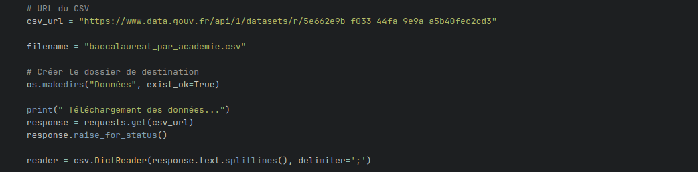
Ensuite, nous ciblons les informations que nous voulons traier.
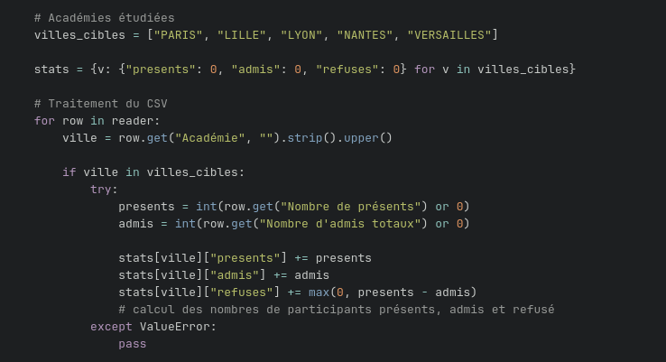
Puis, ces informations sont convertis en dictionnaire.
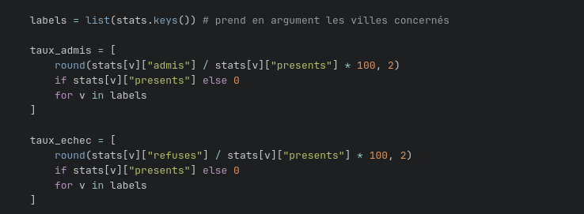
Puis, ils sont utilisés en paramètre pour que le site quickchart affiche le graphique.
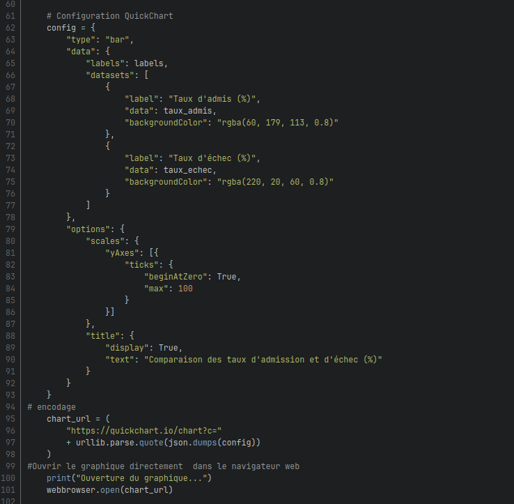
Résultat :
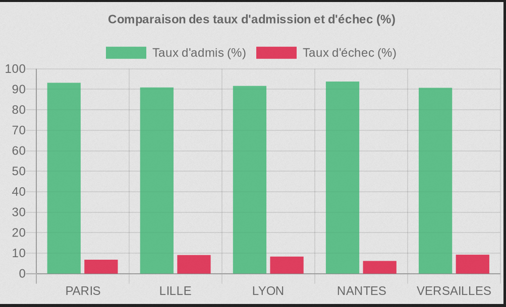
- Difficultés rencontrées
La principale difficulté a résidé dans la programmation du code avec les différentes étapes qui sont assez long.
- Ce que j’ai appris
Cette activité m'a permis de développer un script capable de traité des données dans un site.
- Ce que je ferai autrement
Si je devais refaire cette activité, je me baserai sur ce que j'ai déjà fait pour déjà avoir une base.
- Ce que j'ai fait
Pour optimiser mes travaux, nous avons appris a utilisé des applications, des logigiels permettant de travailler dans des conditions semi-professionnelles
Github et Gitlab sont des plateformes permettant de stocker des fichiers rapidement et héberger des sites portfolio
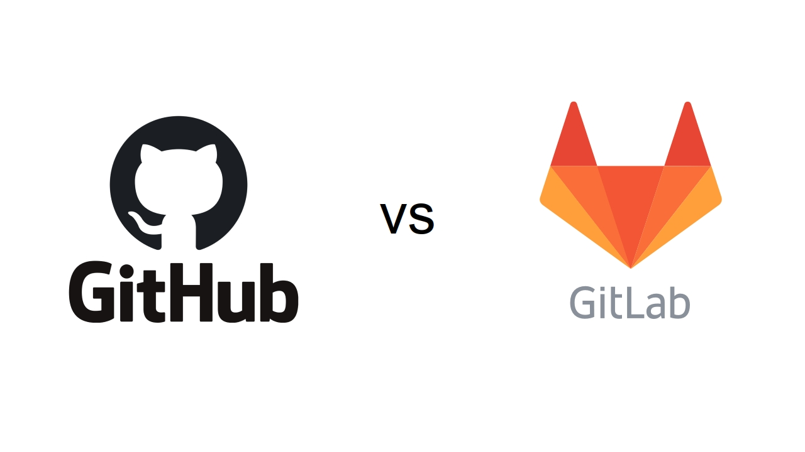
- Difficultés rencontrées
La principale difficulté a résidé dans les erreurs de dépots qui sont quelques fois difficles à régler en ligne de commande.
- Ce que j’ai appris
J'ai appris une nouvelle manière de stocker mes fichiers pour éviter des pertes.